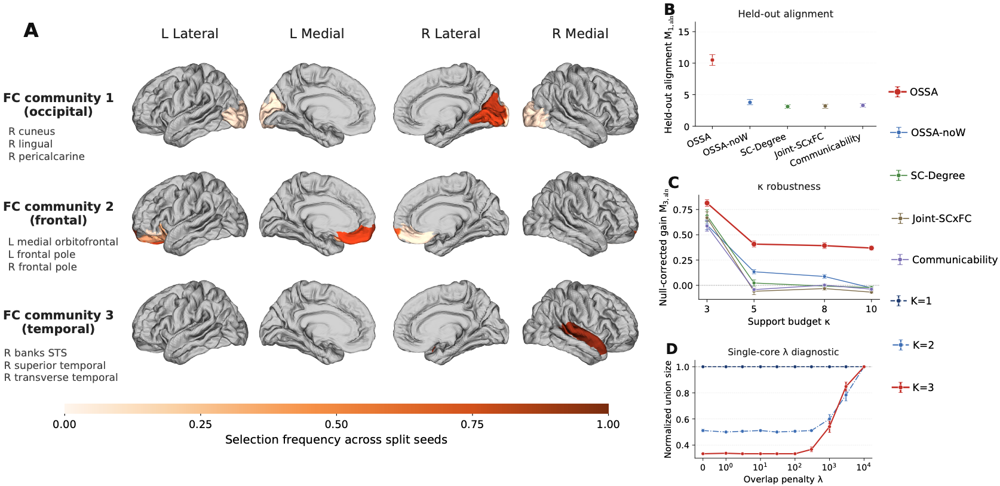

Joint alignment and localization
Extend orthogonal Procrustes to a setting where the alignment target is an unknown induced structural subgraph. Alternate orthogonal and sparse-support updates within each functional community.
NeurIPS 2026 Poster
Learning cross-modal alignment and compact structural supports, together.
1 Department of Biostatistics, Yale School of Public Health, Yale University
2 Department of Statistics and Data Science, University of Texas at San Antonio
3 School of Statistics, University of Minnesota, Twin Cities
The method

Overview
Structural and functional connectivity need not agree everywhere, or in the same coordinates. OSSA jointly estimates an orthogonal transformation and a sparse node set to identify structural subnetworks aligned with functional organization.
Extend orthogonal Procrustes to a setting where the alignment target is an unknown induced structural subgraph. Alternate orthogonal and sparse-support updates within each functional community.
For canonical OSSA in a fixed population community, under the required assumptions, with high probability an empirical local maximizer exists near the population target and every local maximizer in that neighborhood exactly recovers the active support and obeys a finite-sample projector error bound.
A multi-support extension probes for additional aligned cores. Simulations and ABCD baseline and Year-2 analyses assess recovery, held-out alignment, and longitudinal consistency of node selection.
Characterizing the relationship between brain anatomical wiring and functional coordination remains a fundamental challenge in computational neuroscience. This difficulty primarily arises because structure-function coupling in the human brain is spatially heterogeneous, often localized to subnetworks, and inherently difficult to align across disparate representational modalities. To address this methodological gap, we introduce Orthogonal Sparse Subgraph Alignment (OSSA), a principled and interpretable framework designed to identify compact structural cliques that exhibit maximal concordance with functional connectivity (FC) across subjects. Within each FC-derived community, OSSA optimizes an alignment objective over an orthogonal transformation, which absorbs coordinate mismatch between the two connectivity modalities, and a sparse node-selection vector, which identifies the induced structural connectivity (SC) subgraph. Furthermore, for canonical OSSA within a fixed population community, we establish local statistical guarantees under the required assumptions. With high probability, an empirical local maximizer exists in a specified neighborhood of the population target, and every local maximizer in that neighborhood exactly recovers the active support and satisfies a nonasymptotic error bound for the aligned functional projector. Extensive empirical evaluations on simulated data, alongside analyses of the Adolescent Brain Cognitive Development (ABCD) baseline and longitudinal cohorts, demonstrate that OSSA successfully recovers aligned structural cliques under latent cross-modal rotations. Ultimately, the proposed methodology significantly improves out-of-sample SC–FC alignment over size-matched baselines and identifies compact structural supports with longitudinal consistency in node selection, while multi-support diagnostics suggest a dominant aligned core within the estimated FC communities.
Selected results
The ABCD analysis uses structural and functional connectomes on the 68-region Desikan–Killiany atlas, with training, validation, and test splits of 60%, 20%, and 20% across ten seeds.

OSSA is evaluated against fourteen size-matched support-selection baselines and an ablation that fixes the alignment to the identity. Each baseline support is evaluated with its own training-fitted rotation.
| Method | Held-out alignment |
|---|---|
| OSSA | 10.55 ± 0.85 |
| NMF | 9.96 ± 0.82 |
| Sparse PLS | 9.22 ± 1.10 |
| OSSA-noW | 3.82 ± 0.42 |
Comparisons across repeated splits are descriptive: the splits reuse subjects from the same cohort. Complete baseline results and evaluation details are in the paper.
The same protocol at Year 2 yields a cross-visit support replication score of 0.928 ± 0.033, based on support-set Jaccard overlap, with a mean overlap of 2.86 of 3 nodes.
The multi-support diagnostic suggests a dominant aligned core within the estimated FC communities: additional supports collapse at small penalties, while forcing them apart lowers the primary held-out alignment objective.
The selected regions depend on the functional-community construction, sparsity budget, atlas, and cohort. Longitudinal support stability alone does not establish biological specificity.
Reference
@inproceedings{gao2026orthogonal,
title = {Orthogonal Sparse Subgraph Alignment for
Structure-Function Coupling in Brain Networks},
author = {Gao, Haonan and Ham, Daeyoung and Zhang, Yifei and
Tian, Xinyuan and Ding, Shengxian and Zhao, Yize and
Li, Tianxi},
booktitle = {40th Conference on Neural Information
Processing Systems (NeurIPS 2026)},
year = {2026},
url = {https://rampageoppa.github.io/projects/ossa/}
}